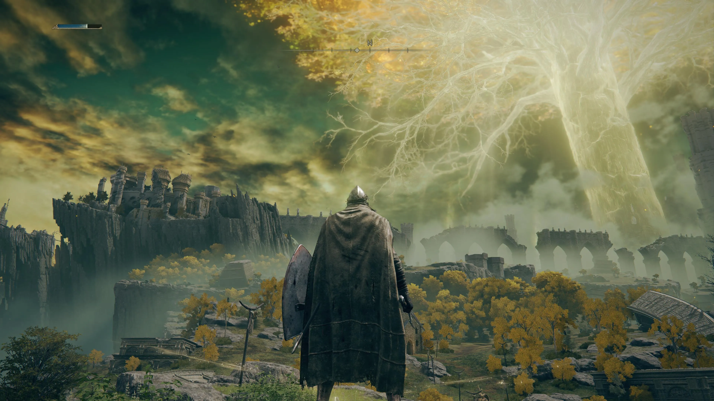

ELDEL RING
ELDEL RING
Álzate, Sinluz, y que la gracia te guíe para abrazar el poder del Círculo de Elden y encumbrarte como señor del Círculo en las Tierras Intermedias.
En las Tierras Intermedias gobernadas por la Reina Márika, la Eterna, el Círculo de Elden, origen del Árbol Áureo, ha sido destruido.
Los descendientes de Márika, todos semidioses, reclamaron los fragmentos del Círculo de Elden conocidos como Grandes Runas. Fue entonces cuando la demencial corrupción de su renovada fuerza provocó una guerra: la Devastación.
Una guerra que supuso el abandono de la Voluntad Mayor. Y ahora, la gracia que nos guía recaerá sobre el Sinluz desdeñado por la gracia del oro y exiliado de las Tierras Intermedias. Tú que has muerto, pero vives, con tu gracia tiempo ha perdida, recorre la senda hacia las Tierras Intermedias más allá del neblinoso mar para postrarte ante el Círculo de Elden.
Y conviértete en el señor del Círculo.

Todo sobre la historia de Elden Ring
¿Hay un villano? ¿Cuál es el papel del personaje principal? Hay muchas cuestiones en torno a la historia de Elden Ring, y muy pocas respuestas que FromtSoftware haya querido dar. Afortunadamente, tanto su teaser como las declaraciones de Hidetaka Miyazaki son más que suficientes para recopilar pistas importantes de cara a escudriñar la verdad tras la historia y el argumento de Elden Ring.
Un anillo para unirlos o romperlos a todos
Elden Ring no es solo el nombre del juego, es el nombre del anillo que parece dar forma al propio mundo en el que transcurre esta aventura de fantasía oscura. El propio Miyazaki explicaba en su momento que este anillo es el nombre que se le otorgaba a un misterioso elemento que "define al mundo en sí mismo". Aunque no se debe interpretar de forma literal como en Halo, sí que se puede abordar como un objeto clave para la subsistencia del lugar donde viven y coexisten tanto criaturas como personajes en este título.
Elden Ring Trailer 2019
El teaser que nos presentó el título mostraba a un herrero, gigantes y un par de misteriosos personajes. Todo eso apunta a ser clave para el desarrollo de una trama que quiere ser abierta y desarrollarse acorde al avance del jugador. FromSoftware no quiere que esta sea una experiencia lineal, lo que puede provocar que haya partes de historia o de lore, escrito por George RR Martin, que muchos pasen por alto.
Pero el eje central de toda esta trama vuelve a ser ese anillo. En boca de Miyazaki, "ha sido destruido" y ese acontecimiento será "uno de los temas importantes del juego". De hecho, en el propio tráiler principal del juego, una voz en off narraba lo siguiente:
"Aquel que comandaba las estrellas, dando a la vida su máximo esplendor: el Anillo de Elden. Oh, el Anillo de Elden. Destruido por alguien o algo. No me digas que no puedes verlo. Mira al cielo. Está en llamas".
El centro de la vida de este universo ha sido destruido y se desconoce el motivo. Es muy probable que esto dé forma a la trama y que tengamos que investigar quién ha sido el responsable para tratar de traer de vuelta los pedazos del anillo y conseguir así que el mundo vuelva a la normalidad o que, por contra, tengamos que dejarlo destruido para los restos. FromSoftware suele ofrecer opciones en este sentido, así que no sorprendería que, al final, la recuperación o la decadencia del mundo queden en manos del jugador.
Diferentes mitologías en un mismo mundo
La obra de Fumito Ueda, los territorios escoceses, el Árbol de la Vida de la mitología nórdica e incluso algunos tintes de la cultura celta. Todo eso confluiría para dar forma a la ambientación y la trama de Elden Ring. De hecho, tras ver algunas de las filtraciones de sus jefes, incluso se podría decir también que hay influencias de la obra de H.P. Lovecraft.
Enemigo en Elden Ring
Este sería uno de los jefes de Elden Ring
Un cúmulo de influencias que, sobre todo, apuntan a reforzar un enorme mundo abierto repleto de opciones y posibilidades. Aunque la historia de la existencia de un anillo especial y poderoso recuerda a ciertas obras literarias de Tolkien, parece que en este videojuego su concepción apunta más en dirección a una deidad, a un ser superior que se encargaba de dar vida y forma al mundo.
Son muchas inspiraciones diferentes que confluyen para dar forma a algo muy especial y que cuenta con la pluma del mismísimo George RR Martin para construir un lore tremendamente profundo y repleto de matices.
Un mundo devastado
George RR Martin en Elden Ring
El trabajo del autor de Juego de Tronos en Elden Ring
Algo que FromSoftware ha dejado muy claro es que, aunque Elden Ring ponga en pantalla un mundo dinámico con enemigos cambiantes, ciclo día/noche y mucho más, no debemos esperar que haya grandes ciudades con muchos personajes. Siguiendo la línea del núcleo de su historia, todo apunta a estar devastado y prácticamente inerte. El mundo está en crisis y se está consumiendo poco a poco tras haberse destruido aquello que le daba vida.
Por eso, aunque habrá muchos personajes con historias entrelazadas, las ruinas y las civilizaciones perdidas serán una constante tanto en el mundo como en la historia del juego. Restos de un mundo repleto de gloria y brillo, pero que ahora se asoma al abismo por la avaricia o por el odio de alguien o algo que quiso acabar con todo.